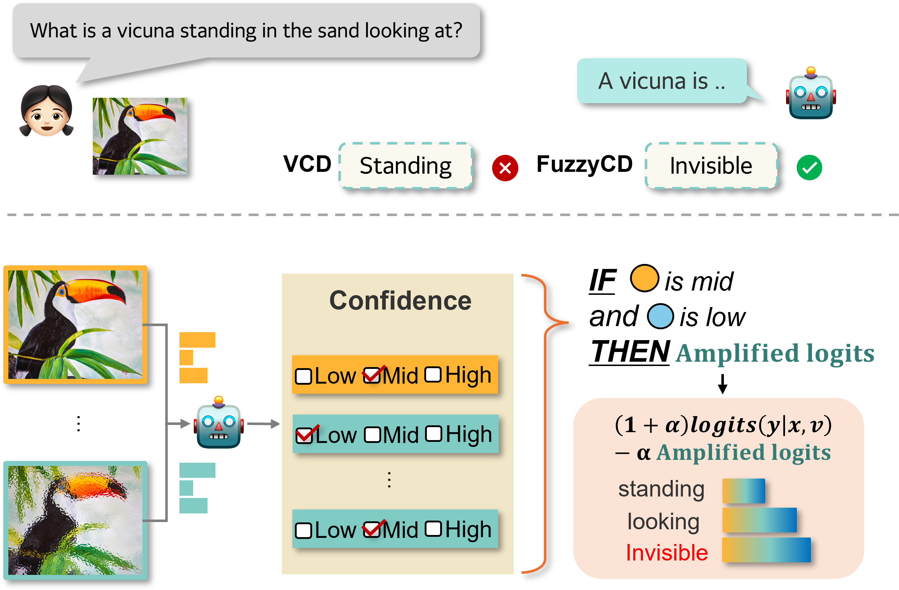
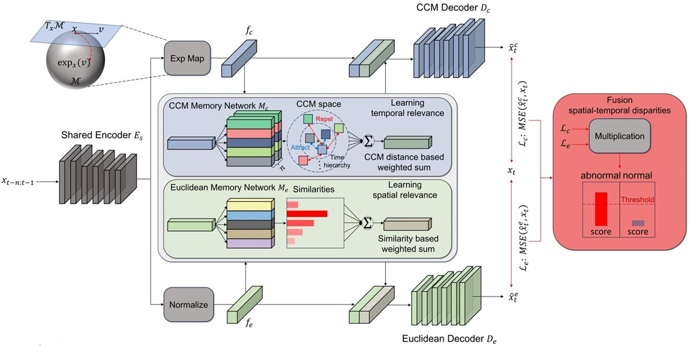

|
Jinmyeong Kim
I'm received my M.S. degree under the supervision of Professor Sung-Bae Cho at SoftComputing Lab, Yonsei University in Seoul, South Korea.
My research interest lies in video understanding and multimodal deep learning. Recently, I am specifically interested in:
-
Unsupervised Video Anomaly Detection:
Can models learn normative spatio-temporal patterns from unlabeled video streams and accurately flag deviations in complex real-world scenes? What architectures and self-supervised objectives best capture both short-term motion and long-term context?
-
Hallucination Mitigation in Vision-Language Models:
To what extent do VLMs generate visual or textual hallucinatory content, and how can we develop robust defenses and evaluation protocols to ensure faithful, trustworthy multimodal reasoning?
Currently, I'm actively searching for a research laboratory to join for my Ph.D. program.
Email /
Scholar /
Github
|
|
Research
I'm interested in computer vision, deep learning, generative AI, image processing and multi modal deeplearning.
|
|

|
Fuzzy Contrastive Decoding to Alleviate Object Hallucination in Large Vision-Language Models
Jieun Kim, Jinmyeong Kim, Yoonji Kim, Sung-Bae Cho
ICCV, 2025
page
/
paper
|
|

|
Unsupervised Video Anomaly Detection by Memory Network with Autoencoders in Euclidean and Non-Euclidean Spaces
Jinmyeong Kim, Sung-Bae Cho
Pattern Recognition, 2025 (IF: 7.5)
paper
|
|
{kind=link}